정밀측정산업기사 (2009-03-01 기출문제)
1과목: 정밀계측
1. 공구현미경을 이용하여 원통의 지름을 측정하여 한다. 렌즈의 초점거리가 100mm, 공작물의 지름이 16mm라 하면 최적 조리개의 직경은 약 몇 mm 인가?
- 6.07
- 6.43
- 7.14
- 7.76
(정답률: 71%)

2. 공기마이크로미터에 대한 설명으로 틀린 것은?
- 배율이 높다.
- 정도가 좋다.
- 최대허용치수용 마스터가 1개 필요하다.
- 내경측정이 용이하다.
(정답률: 93%)
3. 지름 20mm 축을 제작한 결과 다음의 “A, B, C, D" 로 4개가 제작되었다면 오차율 0.02 까지를 합격선으로 할 때 합격품은?
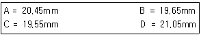
- A 하나 만
- B 하나 만
- A와 B 두개 만
- A, B, C, D 모두 합격품
(정답률: 81%)
4. 단일 지렛대를 변환, 확대 기구로 이용한 측정기는?
- 옵티미터
- 다이얼게이지
- 미니미터
- 마이크로미터
(정답률: 77%)
5. 일반적인 나사의 유효 지름 측정법이 아닌 것은?
- 삼침법
- 공구 현미경에 의한 방법
- 버니어캘리퍼스에 의한 방법
- 나사 마이크로미터에 의한 방법
(정답률: 86%)
6. 축용 한계이지에 해당하지 않는 것은?
- 플러그 게이지
- 스냅 게이지
- C형 스냅 게이지
- 링 게이지
(정답률: 85%)
7. 한계 게이지 방식의 특징 설명 중 틀린 것은?
- 측정에 있어서 다른 방법보다 개인차가 적다.
- 호환석성을 갖는 제품을 검사할 수 있다.
- 제품의 실제 치수를 읽을 수 없다.
- 측정 방법이 비교적 번거로우면 복잡해지기 쉽다.
(정답률: 70%)
8. 표면거칠기의 표시에서 FL은 무슨 가공의 기호인가?
- 연삭 가공
- 줄 다듬질
- 선반 가공
- 랩 다듬질
(정답률: 80%)
9. 지침측미기 A와 B에서 눈금선 간격이 각각 0.5mm, 1mm이고 한 눈금 당 측정치는 각각 1μm, 2μm일 경우 A와 B의 감도(확대율)에 관한 설명으로 올바른 것은?
- A가 높다.
- A, B가 동일하다.
- B가 높다.
- 감도를 비교할 수 없다.
(정답률: 89%)
10. 게이지블록의 부속품이 아닌 것은?
- 평형 조오
- 둥근형 조오
- 홀더
- 기준봉
(정답률: 78%)
11. 측침 회전식 진원도 측정기의 특징 설명에 해당되지 않는 것은?
- 소형물체를 측정하는데 적합하다.
- 스핀들의 회전 정밀도가 좋다.
- 조작이 복잡하다.
- 비교적 대형이므로 가격이 비싸다.
(정답률: 68%)
12. 플러시 핀 게이지는 다음 중 어느 방식인가?
- 직접 측정 방식
- 비교 측정 방식
- 한계 게이지 방식
- 수치화 방식
(정답률: 78%)
13. 게이지블록과 같은 단도기를 지지할 때 지지점을 구하는 에어리 점(airy point) x는?
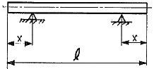
- x=0.2303ℓ
- x=0.2203ℓ
- x=0.2113ℓ
- x=0.3113ℓ
(정답률: 89%)
14. 3차원 측정기를 이용하여 금형부품의 평면도를 측정하기 위한 최소한의 측정점의 수는?
- 3
- 4
- 5
- 6
(정답률: 79%)
15. 30mm의 게이지블록으로 세팅한 하이트 게이지로 측정하여 29.54mm의 측정값을 얻었다면 실제값은? (단, 세팅한 30mm의 게이지블록은 -20μm의 오차가 있다.)
- 29.56mm
- 29.52mm
- 27.74mm
- 29.72mm
(정답률: 68%)
16. 다이얼게이지와 V블록에 의한 진원도 측정법은?
- 직경법
- 3점법
- 촉침법
- 반경법
(정답률: 63%)
17. 생산현장에 사용하고 있는 게이지의 이상유무나 사용중의 마모량을 확인하기 위해서 사용하는 게이지는?
- 검사용 게이지
- 공작용 게이지
- 점검용 게이지
- 기준 게이지
(정답률: 66%)
18. 선반 베드 진직도 검사기 0.02mm/m의 눈금을 가진 길이 200mm의 수준기가 한 위치에서 다음 위치로 옮기나 2눈금 이동하였다. 이 때 경사(기울기)는 몇 초 변동되었나?
- 약 4초
- 약 8초
- 약 20초
- 약 12초
(정답률: 73%)
19. 외측마이크로미터의 앤빌과 스핀들 측정면의 평행도 검사에 필요한 측정기는?
- 게이지블록
- 옵티컬플랫
- 옵티컬파라렐
- 기준바
(정답률: 88%)
20. 버이너캘리퍼스에서 어미자의 눈금선 각격이 0.5mm이고, 버니어는 어미자의 19.5mm를 자들자에서 20등분 하였다면 최소 읽음 값은 몇 mm인가? (단, 실제 제작되는 버니어캘리퍼스와 관계없이 이론적으로 계산한다.)
- 1/10
- 1/20
- 1/40
- 1/50
(정답률: 77%)
2과목: 재료시험법
21. 측정관 내의 초강구 해머가 용수철의 힘으로 시편 표면에 충돌할 때 충돌 전후의 해머 속도비를 재료의 경도로 나타내는 경도시험은?
- 쇼어 경도시험
- 에코팁 경도시험
- 로크웰 경도시험
- 브리넬 경도시험
(정답률: 70%)
22. 금속의 성질 중 프레스 성형 가공의 난이성을 표시하는 성질을 무엇이라 하는가?
- 인성
- 취성
- 탄성
- 소성
(정답률: 81%)
23. 프리프 한도 측정법이 아닌 것은?
- 최소 변율 속도에 의한 방법
- 평균 속도에 의한 방법
- 변율을 주로 한 결정법
- 펜듈럼에 의한 방법
(정답률: 69%)
24. 직경이 10mm, 표점거리 100mm인 연강환봉을 인장시험 후 표점거리가 120mm로 되었을 때 연신율(strain)은?
- 10%
- 20%
- 25%
- 30%
(정답률: 84%)
25. 재료의 인성(toughness) 또는 취성(brittleness)을 평가하기에 가장 적당한 시험법은?
- 인장시험
- 경도시험
- 내마모시험
- 충격시험
(정답률: 82%)
26. 한변의 길이가 15mm인 정사각형 단면의 시험편에 4500kgf의 인장하중을 가했을 때 시편이 받는 인장응력은?
- 1500kgf/cm2
- 2000kgf/cm2
- 2500kgf/cm2
- 3000kgf/cm2
(정답률: 57%)
27. 재료시험의 종류 중 정하중을 가하여 시험하는 정적시험이 아닌 것은?
- 피로시험
- 인장시험
- 전단시험
- 비틀림시험
(정답률: 74%)
28. 마모시험에서 마모량의 측정방법 중 간접적인 방법은?
- 마모계수로 구하는 방법
- 마모에 의해 손실된 재료의 부피로 구하는 방법
- 시편의 질량변화로 구하는 방법
- 시편의 형태 변화로부터 구하는 방법
(정답률: 76%)
29. 재료시험기의 구비 조건이 아닌 것은?
- 안정성이 있을 것
- 내구성이 클 것
- 조작이 간편하고 정밀검사가 가능할 것
- 정밀도가 우수하고 불확도가 클 것
(정답률: 82%)
30. 내구한도 속결법 중 강철이 반복응력을 받을 때 그 응력이 비교적 작을 때에는 응력과 변율선도는 직선으로 된다. 그러나 반복회수가 증가함에 따라 점차 탄성이력곡선을 그리는데 이러한 이력곡선으로 피로한계를 측정하는 방법을 무엇이라 하는가?
- 히스테리시스곡선에 의한 방법
- 반복응력 곡선에 의한 방법
- 온도상승 곡선에 의한 방법
- 스트레인 곡선에 의한 방법
(정답률: 67%)
31. 한국산업규격에서 정한 금속 재료 인장 시험편에서 4호 시험편의 규격은?
- 표점거리 L=40mm, 직경 D=14mm
- 표점거리 L=50mm, 직경 D=14mm
- 표점거리 L=40mm, 직경 D=25mm
- 표점거리 L=50mm, 직경 D=25mm
(정답률: 67%)
32. 샤르피 충격시험기는 어떤 에너지를 이용하여 충격 시험을 하는 것인가?
- 위치 에너지
- 열 에너지
- 마찰 에너지
- 전기 에너지
(정답률: 81%)
33. 시험하중 14710N, 강구지름 10mm를 사용하여 브리넬 경도 시험을 하였더니 압입자국의 지름은 4.8mm였다. 브리넬 경도 값(HBW)은?
- 38.9
- 77.8
- 381.5
- 763.0
(정답률: 56%)
34. 콘크리트, 베어링강을 재료시험 하고자 한다. 어떤 시험이 가장 적당한가?
- 비틀림 시험
- 압축 시험
- 굽힘 시험
- 인장 시험
(정답률: 79%)
35. 굽힘장치에서 재료의 단면 2차 모멘트(I)가 200cm4인 연강 시편을 2개의 받침대에 올려놓고 두 받침대의 정중앙에 하중을 800kgf로부터 1200kgf로 증가시킨 결과 최대 처짐량(δ)은 0.017cm만큼 증가하였다. 이 재료의 종탄성계수(E, kgf/.cm2)는 얼마인가? (단, 받침대간의거리(L)은 100cm이고, 최대 처짐량(δ)=PL3/48EI이다.)
- 2.45×106
- 2.55×106
- 2.65×106
- 2.75×106
(정답률: 57%)
36. 마이어경도시험에서 경도값(Pm)은 어떻게 구하는가?
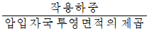
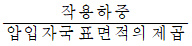
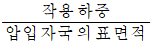
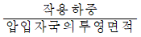
(정답률: 67%)
37. 비틀림 시험장치에서 측정하는 기계적 특성이 아닌 것은?
- 비틀림 계수
- 비틀림 응력
- 비틀림 피로성
- 비틀림 변형량
(정답률: 69%)
38. 충격시험에서 하중이 작용하는 방식에 따라 구분한 것이 아닌 것은?
- 충격 압축 시험
- 충격 굽힘 시험
- 충격 비틀림 시험
- 단일 충격 시험
(정답률: 78%)
39. KS의 금속재료의 브리넬 경도 시험 방법에서 초경 합금구로 된 압입자로 경도 시험시 시험 재료의 경도는 몇 HBW이하이어야 하나?
- 300 HBW 이하
- 450 HBW 이하
- 650 HBW 이하
- 900 HBW 이하
(정답률: 58%)
40. 특정온도에서 일정응력을 가했을 때 시간의 경과에 따라 증가하는 변형량을 측정하여 그 재료의 성질을 조사하는 시험은?
- 크리프시험
- 피로시험
- 충격시험
- 경도시험
(정답률: 77%)
3과목: 도면해독
41. 이론적으로 정확한 치수임을 나타내는 제도 기호는?
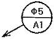
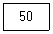
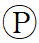
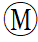
(정답률: 87%)
42. 아래 표를 보고 축을 구멍을 조립시 발생하는 최소 틈새는 얼마인가?
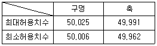
- 0.015
- 0.043
- 0.044
- 0.063
(정답률: 81%)
43. 도면에서 가상선으로 사용되는 선은?
- 가는 실선
- 가는 파선
- 가는 2점 쇄선
- 가는 1점 쇄선
(정답률: 73%)
44. 도면과 같이 핀의 진직도가 규제되었을 때 전길이에 대한 최대 허용 가능한 진직도 공차값은 얼마인가?
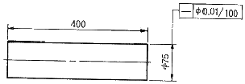
- 0.01
- 0.04
- 0.16
- 0.21
(정답률: 71%)
45. 그림과 같이 도면 기호를 올바르게 설명한 것은?
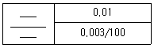
- 지정길이 100mm에 대하여 0.003mm, 전체길이에 대하여 0.01mm 대칭
- 전체길이 100mm에 대하여 0.03mm, 지정길이에 대하여 0.01mm 대칭
- 지정길이 100mm에 대하여 0.01mm, 전체길이에 대하여 0.003mm 대칭
- 전체길이 100mm에 대하여 0.01mm, 지정길이에 대하여 0.003mm 대칭
(정답률: 82%)
46. 그림과 같이 나타내는 투상도로 알맞은 것은?
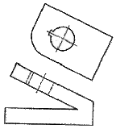
- 회전투상도
- 보조투상도
- 부분확대도
- 국부투상도
(정답률: 78%)
47. 주어진 투상도에서 평면도로 맞는 것은?
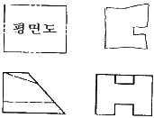
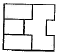
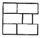
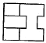
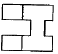
(정답률: 68%)
48. 치수선에 대한 설명으로 틀린 것은?
- 치수를 기입하기 위하여 외형선에서 2~3mm 연장하여 그은 선이다.
- 외형선과 평행하게 긋는다.
- 가는 시선을 사용한다.
- 치수 기입에 사용되는 선으로 치수보조선과 함께 쓰인다.
(정답률: 83%)
49. 기하공차의 종류와 기호의 연결이 틀린 것은?
- ∠:경사도
- ◎:동축도
- ○:동심도
- //:평행도
(정답률: 84%)
50. 아래와 같이 기하공차가 주어졌을 때 축부위(Φ6.5)의 실효치수(VS)로 옳은 것은?
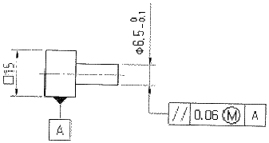
- 6.4
- 6.46
- 6.5
- 6.56
(정답률: 71%)
51. 도면상에 구멍사이의 위치공차가
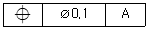
로 표시되었다면 어떻게 해석해야 하는가?- 각 구멍의 중심선의 위치공차는 구멍의 치수가 어떠하든 항상 Φ0.1 이내에 있어야 한다.
- 각 구멍의 중심선의 위치공차는 구멍의 치수가 MMS 치수일 때 Φ0.1 이내에 있어야 한다.
- 각 구멍의 중심선의 위치공차는 구멍의 치수가 LMS 일 때 Φ0.1 이내에 있어야 한다.
- 각 구멍의 중심선의 위치공차는 구멍의 기준치수가 Φ0.2를 초과해서는 안된다.
(정답률: 82%)
52. 기하공차를 모양공차, 자세공차, 위치공차, 흔들림공차로 구분할 때 자세공차에 속하는 것은?
- ◎
- ∠
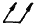
- ▱
(정답률: 79%)
53. 직각도를 규제하는 공차역을 설명한 것으로 맞는 것은?
- 데이텀 평면에 수평한 평면을 갖는 형태
- 데이텀 평면에 수직한 중간면을 갖는 형태
- 데이텀 평면이나 축심에 평행한 다른 면을 갖는 형태
- 데이텀 축심에 대해 경사도를 갖는 형태
(정답률: 80%)
54. 그림과 같은 공차표기틀에 단독 형체의 모양 공차를 표기할 때 A와 B에 각각 수록할 내용은?
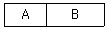
- A=공차 값, B=공차종류기호
- A=문자기호, B=공차 값
- A=공차종류기호, B=문자기호
- A=공차종류기호, B=공차 값
(정답률: 73%)
55. 표면 거칠기를 나타내는 파라미터가 아닌 것은?
- 산술 평균 거칠기(Ra)
- 최대 높이(Ry)
- 10점 평균 거칠기(Rz)
- 최소 높이(Rs)
(정답률: 77%)
56. 기하공차에 관한 설명 중 틀린 것은?
- 위치공차에는 위치도, 동축도, 대칭도, 직각도가 있다.
- 적절한 기하공차 적용으로 결합 부품 상호간의 호환성을 주고 결합 상태를 보증할 수 있다.
- 기하공차는 기능상의 요구, 호환성 등에 의거하여 꼭 필요한 곳에만 지정한다.
- 모양공차에는 진직도, 평면도, 진원도, 원통도 등이 있다.
(정답률: 78%)
57. 도면 종류 중 내용에 따른 분류방법에 속하지 않는 것은?
- 부품도
- 조립도
- 승인도
- 배치도
(정답률: 85%)
58. ø36H7/g6의 끼워맞춤에서 최대 틈새는 몇 mm인가? (단, 아래 도표를 이용하고, 공차 단위는 μm이다.)
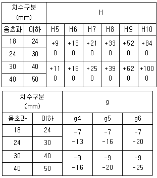
- 0.034
- 0.⑤0
- 0.340
- 0.500
(정답률: 72%)
59. 최대실체공차방식의 표시방법으로 틀린 것은?
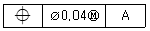
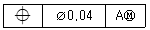
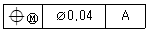
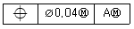
(정답률: 80%)
60. 마이크로 필름 촬영, 복사 등의 편의를 위하여 도면의 4군데에 마련하는 것은?
- 테두리선
- 비교눈금
- 중심마크
- 무게중심선
(정답률: 78%)
4과목: 정밀가공학
61. 잇수가 248인 기어를 밀링 가공하려할 때, 24, 27, 31, 33개의 분할판 구멍수가 준비되었다면 가장 적합한 구멍 수는? (단, 주축과 분할 크랭크의 회전수비는 1:40이다.)
- 27
- 31
- 24
- 33
(정답률: 66%)
62. 밀링머신에서 지름 60mm의 환봉에 리드가 280mm인 나선홈을 절삭한 경우 나선각 θ는 약 얼마인가?
- 12° 51°
- 18° 36°
- 33° 57°
- 42° 82°
(정답률: 63%)
63. 범용 선반에서 각도가 작고 길이가 긴 공작물의 테이퍼를 가공할 때 가장 적합한 것은?
- 심압대를 편위시키는 방법
- 복식 공구대를 회전시키는 방법
- 총형 바이트에 의한 방법
- 왕복대와 공구대를 동시에 작동하는 방법
(정답률: 66%)
64. 탭(tap)작업에서 탭의 파손원인으로 볼 수 없는 것은?
- 탭이 경사지게 들어간 경우
- 드릴 구멍이 너무 크거나 느리게 절삭한 경우
- 막힌 구멍의 밑바닥에 탭의 선단이 접촉한 경우
- 탬 지름에 적합하지 않은 핸들을 사용한 경우
(정답률: 72%)
65. 구성인선에 관한 설명으로 틀린 것은?
- 구성인선이 발생하면 공구의 수명이 감소된다.
- 구성인선이 발생하면 공작물의 치수 정도가 떨어진다.
- 주로 소성가공에서 발생한다.
- 주기적으로 반복되면 가공작업에 영향을 준다.
(정답률: 70%)
66. 선반가공에서 적삭가공면의 표면거칠기는 여러인자의 영향을 받으나 공구 끝의 형상에 의한 영향이 크다. 이송을 f(mm/rev), 공구 노즈 반지름을 γ(mm)이라고 할 때 이론적인 표면 거칠기 H(mm)의 값은?
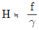
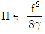
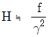
- H≒ 8rf
(정답률: 71%)
67. 일반적인 브로칭 머신에서 가공할 수 없는 것은?
- 사각형의 홈
- 스플라인 홈
- 반달키의 홈
- 세그먼트 기어
(정답률: 60%)
68. 일반적인 절삭 가공이론에서 절삭의 3분력이 아닌 것은?
- 주분력
- 배부력
- 이송분력
- 종단분력
(정답률: 85%)
69. 공작기계의 절삭 가공시 수용성 절삭유의 사용 목적 및 특징 설며으로 틀린 것은?
- 공구와 공작물의 냉각작용
- 공작물의 가공 표면조도 향상
- 공구와 공작물의 부식방지
- 공구 팁의 마모 감소
(정답률: 73%)
70. 공작기계의 이송속도(feed speed) 단위가 아닌 것은?
- mm/rev
- mm3/min
- mm/min
- mm/stroke
(정답률: 70%)
71. 드릴링 머신에서 할 수 없는 작업은?
- 리밍
- 카운터 보링
- 버핑
- 카운터 싱킹
(정답률: 71%)
72. 입자가 날아와 공작물 표면에 충돌하여 이물질 제거 및 피로 강도를 증가시켜주는 가공방식만으로 짝지어진 것은?
- 구릿 블라스트(grit blast), 숏 피닝(shot peening)
- 샌드 블라스트(sand blast), 버핑(buffing)
- 그릿 블라스트(grit blast), 폴리싱(polishing)
- 숏 피닝(shot peening), 래핑(lapping)
(정답률: 70%)
73. 절삭 공구의 수명 T와 절삭속도 V 사이의 관계식인 테일러(Taylor)의 공구 수명식으로 옳은 것은? (단, V=절삭속도(m/min), n=지수, T=절삭 공구의 수명(min), C=상수)
- VT=Cn
- VTn=C
- Tn=VC
- CnV=I
(정답률: 83%)
74. 그림과 같은 테이퍼 가공을 할 때, 복식 공구대의 회전각 a는 얼마로 하여야 하는가?
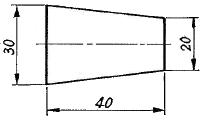
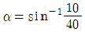
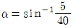
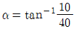
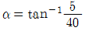
(정답률: 55%)
75. 연삭숫돌의 표시가 'WA 46 K M V' 일 때 ‘46’은 무엇을 표시하는가?
- 조직
- 결합도
- 입도
- 결합제
(정답률: 71%)
76. 밀링커터의 절삭속도가 90m/min이고 커터의 지름 100mm, 커터의 날수 10개, 커터날 하나에 대한 이송량이 0.5mm라면 테이블의 이송속도는 약 몇 mm/min 인가?
- 1331
- 1432
- 1534
- 1635
(정답률: 58%)
77. 래핑(lapping)의 장점에 대한 설명으로 거리가 먼 것은?
- 거울면과 같은 다듬질면을 얻을 수 있다.
- 다량생산에 적합하고, 작업방법이 간단하다.
- 고도의 정밀가공에도 숙련이 필요하지 않다.
- 다듬질면은 내마모성과 윤활성이 좋다.
(정답률: 71%)
78. 기계적 에너지로 진동을 하는 공구와 가공물 사이에 연삭 입자와 가공액을 주입하고서 작은 압력으로 공구에 높은 주파수의 진동을 주어 유리, 세라믹, 다이아몬드, 수정 등 취성이 큰 재료를 가공할 수 있는 가공법은?
- 전해 연마
- 방전 가공
- 전해 가공
- 초음파 가공
(정답률: 81%)
79. 길이 42cm인 둥근 봉을 1회 선삭하는 데 소요되는 절삭 시간은 몇 분인가?
- 3
- 7
- 11
- 17
(정답률: 60%)
80. 수직밀링머신에서 작업자가 밀링에 마주서서 작업을 할 때 공작물을 전ㆍ후로 움직일 수 있도록 하는 부위의 명칭은?
- 칼럼(column)
- 니(knee)
- 베드(bed)
- 새들(saddle)
(정답률: 74%)
공구현미경은 렌즈를 사용하기 때문에 렌즈의 초점거리가 중요하다. 이 문제에서는 초점거리가 100mm이 주어졌다.
공구현미경으로 측정한 지름은 다음과 같이 계산할 수 있다.
지름 = (2 x 초점거리 x 조리개 직경) / (공구현미경으로 본 크기)
여기서 공구현미경으로 본 크기는 공작물의 실제 크기를 공구현미경으로 본 크기로 나눈 값이다.
공작물의 지름이 16mm이므로 공구현미경으로 본 크기는 1로 계산할 수 있다.
따라서 지름 = (2 x 100 x 조리개 직경) / 1 = 200 x 조리개 직경 이다.
최적 조리개의 직경을 구하기 위해서는 지름을 가장 정확하게 측정할 수 있는 직경을 선택해야 한다. 이를 위해서는 조리개의 크기가 작을수록 좋다.
보기에서 조리개 직경이 가장 작은 값은 6.07이다. 하지만 이 값으로 계산하면 지름이 200 x 6.07 = 1214mm가 된다. 이는 공작물의 실제 지름인 16mm보다 훨씬 큰 값이므로 올바른 답이 아니다.
다음으로 작은 값인 6.43으로 계산해보면 지름이 200 x 6.43 = 1286mm가 된다. 이 역시 공작물의 실제 지름보다 큰 값이므로 올바른 답이 아니다.
그 다음으로 큰 값인 7.76으로 계산해보면 지름이 200 x 7.76 = 1552mm가 된다. 이는 더욱 큰 값이므로 올바른 답이 아니다.
마지막으로 7.14로 계산해보면 지름이 200 x 7.14 = 1428mm가 된다. 이 값은 공작물의 실제 지름보다 작은 값이므로 올바른 답이다.
따라서 최적 조리개의 직경은 7.14mm이다.